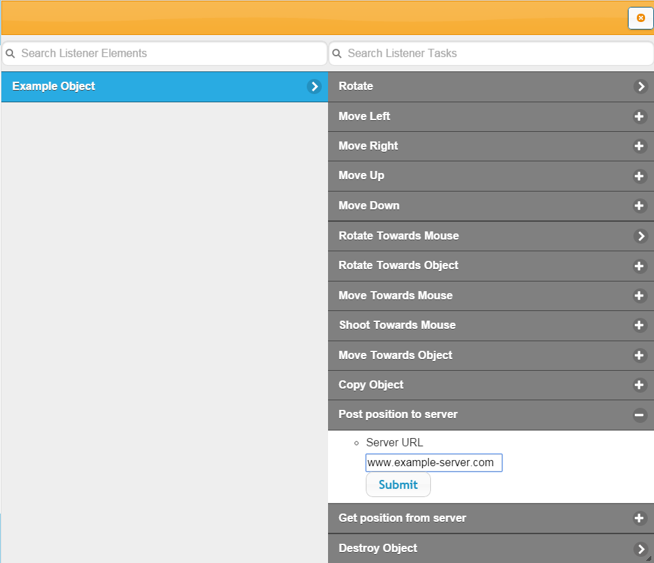
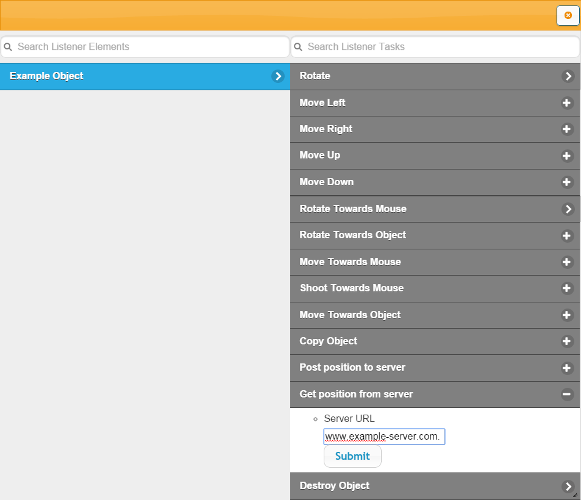

Creating a Multiplayer Game
To create a multiplayer game you will need two components - a game and a server. The server will store all of
the data such as object positions. The game will then send and receive data from the server which describes
the position of other players. You can control which data is sent to the server and when by creating
events in the game editor. This tutorial will provide you with a sample server and steps on how to establish
contact with this server in order to create a multiplayer game.
First, a server needs to be created to store all of the data and send it to the game when needed. Cloud
server services, such as c9.io, are very effective when used as multiplayer servers.
Below is an example of some Node.js programming code that can be copied and used to run a server.
View Server Code
var express = require("express");
var app = module.exports = express();
app.configure(function() {
app.set('views', __dirname + '/views');
app.set('view engine', 'jade');
app.use(express.bodyParser());
app.use(express.methodOverride());
app.use(app.router);
app.use(express.static(__dirname + '/public'));
});
var objectArray = [];
app.get('/getPos', function(req, res){
var arrayIndex = posInArray(req.query.objectID);
if(arrayIndex !== false){
console.log(arrayIndex);
var returnObject = JSON.stringify({x: objectArray[arrayIndex].x, y: objectArray[arrayIndex].y});
res.jsonp(returnObject);
}
else res.jsonp("Object not found");
})
app.get('/putPos', function(req, res){
var newObject = {};
newObject.name = req.query.objectID;
newObject.x = req.query.x;
newObject.y = req.query.y;
var arrayIndex = posInArray(newObject.name);
console.log(arrayIndex);
if(arrayIndex !== false) objectArray[arrayIndex] = newObject;
else objectArray.push(newObject);
res.jsonp("Position saved");
console.log(objectArray);
})
function posInArray(objectID){
for(var i = 0; i < objectArray.length; i ++){
if(objectArray[i].name == objectID){
return i;
}
}
return false;
}
app.listen(process.env.PORT);
Posting the data to a server
The next step is to create your game and add all of the events and objects that are needed.
When this is done you should add an event to post the data to the server. This will save the position of an
object so the other player's game can access it and display it on their screen. This data can be posted using
any event listener. For example, the game could be instructed to post the data every time the mouse is moved.
The amount of times data is posted should be kept to a minimum to ensure the game runs as fast as possible.
To post data to the server open the Event Creator by pressing the Add New Event button. You can then select any
event listener by selecting an object from the left list and then a listener from the right. This is demonstrated in the image below.
When a listener has been selected you will be taken to the second event creator screen. The object you wish
to post to the server should be selected on the left list. You should then select Post Position To Server.
When asked for the server URL please enter the URL in which your server is located. Most cloud server websites
will provide you with this information. Please ensure that there is no forward slash at the end of the URL
and that the URL is surrounded in inverted commas.

Getting the data from a server
The process of getting an object's position from the server is very similar to posting to the server.
First an event listener will be selected on the first Event Creator page. The data from the server will be
called each time this event occurs. For example, it could be called each time the user presses a key.
On the next Event Creator screen you will select the object that you wish to obtain the position of. You will
then select Get position from server on the right list. The process of entering the URL is identical to the
one used when sending the data to the server.

Whenever this event is called it will fetch the positional data from the server and automatically update the
object's on screen positioning. If two players are running the same version of the game control of one
object could be assigned to one player and control of a second object could be assigned to the other.
Each game can then post updates on their own position and get updates on the other player's position.